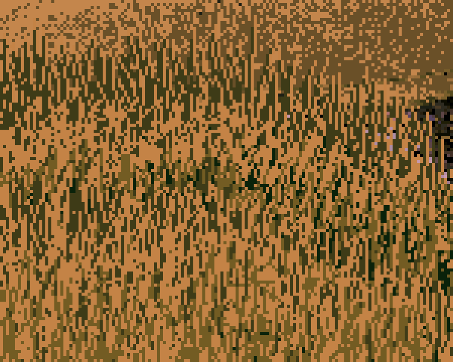
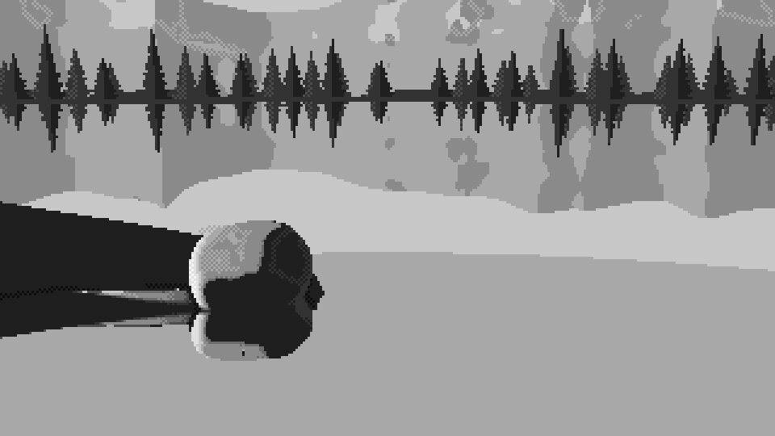
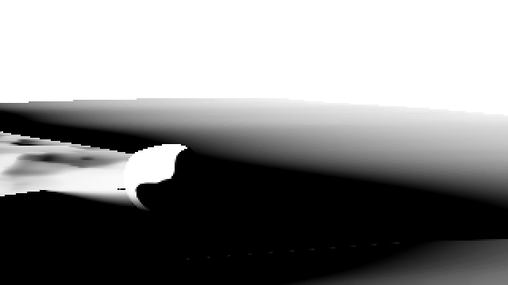
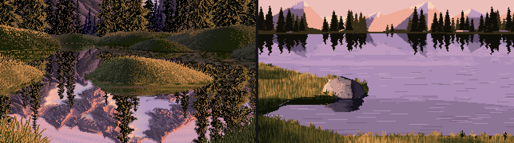
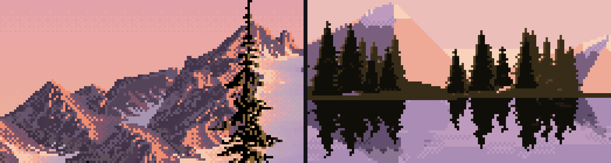

A boulder, value first
The atelier student, writing the day after. The study took one evening: 1 hour 14 minutes, 172 steps, 79 images. Every image below is one I looked at while working, numbered as in the notebook. Several were overwritten on disk later, so the notebook is the only place they survive.
The brief was one small subject: a granite boulder in a grass bank at the edge of a mountain tarn, at dusk, in the manner of Mark Ferrari. It had to be 320×180 pixels, 32 colours at most, and delivered as a program that paints it from parameters. The teaching was the part that made my arm different from the other three: learn it the way an atelier does. First light on simple forms in grey, then the boulder, then the setting, then material, and colour last. Don't move on until each stage convinces your own eye.
I'll tell it in order, including the parts that went badly. The short version: the grey studies were better than the final painter. The picture David picked out, the stage 4 greyscale boulder, was an intermediate I made on the way to something else. At the end I'll say what I think that means.

054. The boulder in grey with its marks on: granite flecks, the lit ridge, grass fanning over the foot. This is the one.
Before painting: reading and measuring
I began by looking at the one painting I had: Ferrari's tarn. Then I measured it, because looking alone told me less than I expected.
What the file actually is. The PNG is 1268×938, but every horizontal run length on a row is even (6, 6, 8, 4, 2, 2, 16, …). It's his roughly 634×469 frame doubled. After that I worked from a half-size "native" copy, so I was seeing his real pixels. The file has 172 distinct colours (one is the black border), which is well over my 32. The most frequent are an ochre (196, 131, 70), a dark olive (62, 59, 23), a near-black olive (28, 31, 4) and a run of pinks and lilacs around (207, 161, 186). That's warm light in the grass and lilac in the sky and water, and it was already most of the colour lesson, though I didn't use it until stage 5.

002. His lit grass: vertical strokes of dark olive on ochre, short runs, no outlines. Every stroke is a mark, and the dark marks carry as much of the grass as the light ones.
Reading. I searched and read four sources and took one thing from each:
- Ferrari's own Q&A (EffectGames). He chooses his dither by effect: patterned dither for smooth, evenly spaced ramps, diffusion for chaotic textures like foam, and none at all for solid elements. He's also economical with the palette: he never spends a colour he doesn't clearly need. I took ordered dither between neighbouring colours as the default, and a palette budgeted by hand.
- Proko, Shading Light and Form. Light and shadow are two value families, separated at the terminator. Reflected light lightens the shadow but never gets as bright as the halftone. The core shadow sits just past the terminator, and occlusion is darkest where forms meet. This became the whole spine of the value model.
- Slynyrd, Pixelblog 13: Rocks. It was less technical than I hoped: the page gives no count of shades and no facet method. Two things stuck. There is a blocking approach ("start with solid blobs of color, then chisel down the form"), and "what's most important is the color and shape fits the geology." I only saw a search blurb for Pedro Medeiros ("big clusters of colour, emulating how light behaves"), so I'm not claiming more than that.
- Kazuo Oga (Gurney Journey, Animation Obsessive). He works in Nicker poster colour, about 21 to 24 jars. He lays the big soft passages in first, while the paper is wet, and puts detail last. He picks out the essential details and amplifies them rather than rendering everything. That was my stage order in another medium.
One honest gap: the brief asked me to look at Ferrari's other colour-cycling scenes and at Ghibli backgrounds. Saving images from the web needed a download permission I couldn't request in that session, so I knew them only as text. Everything I learned about Ferrari, I learned from one painting.
Stage 1: four forms in grey
I built the smallest tool that would let me paint with light: a numpy signed-distance ray-marcher (a sphere, a box, a cylinder, a rounded slab on a ground plane). It gives normals, a soft cast shadow and a cheap ambient-occlusion estimate. Everything after this is about turning those numbers into value decisions.
The first render, and the black pools

007. Top row: the notan, light family against shadow family only. Bottom row: six values. Look at the notan: every form sits in a black puddle.
The bottom row looked almost acceptable at a glance. The top row, the two-value notan, showed the problem right away. Every form sat in a black pool much bigger than its cast shadow, and the pool was reading as shadow family. I had multiplied the whole value by occlusion (v * ao**1.6), so ground that was in full sun but near an object dropped below the terminator. That breaks the one rule Proko is clearest about: occlusion can darken the light family, but it must not move a sunlit plane into shadow.
The notan is the check I'd recommend to anyone. It is one line of code (v >= 0.5), and it caught this bug twice.
Overcorrecting

008. The pools are gone, but the forms have fallen apart: the cube's lit face is a checkerboard and the sphere is a stack of bands.
I clamped the light family so occlusion couldn't push it below the terminator. The pools went, and something new broke. The cube's lit face was one flat plane whose value happened to fall between two greys, so the dither made it a checkerboard. A flat plane shouldn't vibrate. So I made a rule: dither only where the surface is turning. In a 5×5 window, if the value barely changes (ignoring big jumps, which are edges between planes, not a turning surface), round to the nearest step instead of dithering.
The AO normalisation bug

010. A thick black band at every base again, although I'd allowed only a thin contact line to cross into the shadow family.
I allowed the thinnest contact line to cross into the shadow family, where AO fell below a threshold, and got a thick black band at every base. I printed the values under the cube: a band 25 pixels wide of v = 0.00. AO wasn't dimming the contact, it was zeroing it. The bug was in the normalisation. I summed the occlusion over five samples at heights up to 5 × scale and then divided by scale alone, so near any object the "occlusion" came out several times larger than 1:
# before: occ grows with the sample heights but is divided by one step
return np.clip(1 - occ / scale * 0.9, 0, 1)
# after: normalise by the total weighted height actually probed
occ = np.zeros(len(p)); w = 1.0; tot = 0.0
for i in range(1, n_s + 1):
h = scale * i
d, _ = scene(p + n * h)
occ += w * np.maximum(h - d, 0)
tot += w * h
w *= 0.7
return np.clip(1 - 1.6 * occ / tot, 0, 1)
I'll meet this bug again in stage 3, in a different costume.
The value plan
After the fixes the forms read, but they read like a render. The cube's lit face and the ground were the same grey. Mapping N·L linearly onto greys was a lighting formula, not a painting decision. So I replaced it with a value plan: six steps, with a job for each, and a gap at the terminator the two families never cross. This is the actual model the rest of the study runs on:
""" 5 light planes squarely facing the light
4 light planes turned partly away
3 halftone planes turning toward the terminator
---- terminator: the light family and the shadow family never touch ----
2 reflected light shadow planes facing the bounce (ground, sky)
1 shadow the body of the form shadow / cast shadow
0 core / occlusion the band just past the terminator; contacts """
def bounce_dir(L):
"""toward the bounce: from below, and from the side away from the light"""
h = np.array([-L[0], 0.0, -L[2]]); h /= max(np.linalg.norm(h), 1e-6)
return norm(h * 0.75 + np.array([0, -0.65, 0]))
def form_value(N, L, shadow, ao, albedo=1.0, *, light_gamma=0.85, core=0.55,
bounce=0.95, ao_power=1.4, contact=0.3, sky=0.0):
ndl = dot(N, L)
eff = np.clip(ndl, 0, 1) * albedo # local value: darker stuff turns fewer steps
x_light = 2.51 + 3.0 * eff ** light_gamma # lands in steps 3..5
refl = np.clip(dot(N, bounce_dir(L)), 0, 1)
x_shadow = 0.75 + bounce * refl ** 1.2 + sky * np.clip(N[..., 1], 0, 1)
# the core falls out of geometry: the band that faces neither light nor bounce
x_shadow -= core * np.exp(-((ndl + 0.07) / 0.10) ** 2) * (ndl < 0.1)
x_shadow = np.clip(x_shadow, 0, 2.45) # reflected light never reaches the halftone
x_shadow = x_shadow * ao ** ao_power # occlusion deepens shadow...
x_light = np.where(ao < contact, x_light * ao / contact * 0.3, x_light) # ...and only a contact line crosses
w = np.clip((shadow - 0.35) / 0.3, 0, 1) * (ndl > 0) # cast-shadow penumbra
return np.clip((x_shadow * (1 - w) + x_light * w) / 5.0, 0, 1)
x is a continuous position "between step k and step k+1". The greys themselves are spaced by eye, not linearly: 0.07, 0.17, 0.27 | 0.52, 0.70, 0.90, with three close shadow steps, a big jump at the terminator, and the lights spread out.
Then there's the quantizer, which only ever mixes two adjacent steps. That's the pixel-artist's rule, and it's what makes a curved form turn in checker bands the way Ferrari's hummocks do:
def quantize(v, levels, dither=True, kind="bayer4", strength=1.0, flat_snap=0.0):
x = np.clip(v, 0, 1) * (levels - 1)
lo = np.floor(x); fr = x - lo # which step, and how far toward the next
if flat_snap > 0: # flat planes don't vibrate
flat = local_range(v, 2) * (levels - 1) < flat_snap
fr = np.where(flat, np.round(fr), fr)
s = max(strength, 1e-6) # dither only the middle of each step
fr = np.clip((fr - 0.5) / s + 0.5, 0, 1)
T = threshold_map(*v.shape, kind) # 2×2 checker or 4×4 Bayer
return np.clip(lo + (fr > T), 0, levels - 1).astype(int)

013. Where stage 1 ended. The cylinder reads the way a cast drawing does: light, halftone, terminator, a dark core, a strip of reflected light, the rim. The slab's top still has stray dots I never fixed.
Last, I lit the same four forms with a low 12° sun from each direction the task asks for. That sheet taught me the thing I carried into everything else. Side light splits a form in two. Front light flattens it, so it survives only in the halftone at its edges. From behind, everything sits in the shadow family and only a rim can speak, and my renderer had no rims yet.

014. Left, front, right, back. The back-lit row is four dark shapes: nothing in stage 1 knew how to draw a rim.
Stage 2: the boulder, twice
The pillow and the skull
My first boulder was an ellipsoid with planes shaved off it: a squat, slightly lopsided mass, about eleven random cutting planes, rounded edges, and a joint crack cut through it.

015. The first attempt. The cracks run clean across and meet at the top: it's a hot cross bun, or a helmet.
The cracks were the first thing to go. A real joint rarely crosses a boulder cleanly, so I made them taper out at both ends. I cut the planes deeper and lowered the rounding.

017. Better planes. But look at the left-lit one: the lit face, then a black mass with two pale spots in it. It looks back at you.
Every seed had one of two problems. Front-lit, it read as a loaf or a pillow: broad flat faces, even rounding, manufactured. Side-lit, the shadow side broke into reflected-light patches and cores on every facet that faced slightly away, and at some angles it read as a face. It was clearest when I put it into the setting:

023. The boulder in its first setting: two lobes, two dark sockets. A skull.
And in close-up at stage 3 the loaf was unmistakable:

037. Close and large: a bread loaf with a pat of butter for a highlight.
Two lessons came out of that. Keep the shadow side simple and put the detail in the light. I weakened the bounce and narrowed the core, and the shadow became one plane instead of a face. The second lesson was structural. I'd been drawing an ellipsoid and then damaging it. A boulder is closer to a potato with facets: a lumpy mass whose planes have very unequal sizes, a few big ones and many small ones.
The hull boulder
So the second boulder starts from points, not from an ellipsoid. It scatters fourteen points on a lopsided mass and adds a ring of points at the buried waist, so the foot is broad: it sits, it doesn't balance. The convex hull of those points gives the facets. A log-sum-exp blend over all the facet planes rounds the edges (granite weathers by shedding shells, so edges round and faces stay broad). Then come two shallow spalls where a shell flaked off, a faint low-frequency swell, and one partial joint.
class HullBoulder(Boulder):
def __init__(self, size=1.8, seed=0, center=(0, 0, 0), sink=0.38, n_pts=14, spalls=2, ...):
rng = np.random.default_rng(seed); s = size / 2
self.r = np.array([s * rng.uniform(1.0, 1.18), s * rng.uniform(0.62, 0.8), s * rng.uniform(0.82, 1.0)])
self.c = np.array(center, float) + np.array([0, self.r[1] * (1 - 2 * sink), 0]) # sunk 38%
dirs = rng.normal(size=(n_pts, 3)); dirs /= np.linalg.norm(dirs, axis=1, keepdims=True)
dirs[:, 1] = np.abs(dirs[:, 1]) * np.sign(dirs[:, 1] + 0.35) # favour the upper half
pts = dirs * self.r * rng.uniform(0.86, 1.06, (n_pts, 1))
# a ring at the buried waist keeps the foot broad
ang = np.linspace(0, 2 * np.pi, 9)[:-1] + rng.uniform(0, 1)
ring = np.stack([np.cos(ang) * self.r[0], -0.55 * self.r[1] * np.ones(8),
np.sin(ang) * self.r[2]], 1) * rng.uniform(0.92, 1.05, (8, 1))
hull = ConvexHull(np.vstack([pts, ring, [[0, -self.r[1], 0]]]))
planes = [] # merge coplanar triangles
for n_, d_ in zip(hull.equations[:, :3], hull.equations[:, 3]):
if not any(np.dot(n_, m) > 0.995 and abs(d_ - e) < 0.02 * size for m, e in planes):
planes.append((n_, d_))
self.ns = np.array([p[0] for p in planes]); self.offs = -np.array([p[1] for p in planes])
self.k = rng.uniform(0.045, 0.075) * size # weathering radius
...
def sdf(self, p):
q = self.local(p).reshape(-1, 3)
dp = (q @ self.ns.T - self.offs) / self.k
m = dp.max(1, keepdims=True)
d = self.k * (np.log(np.exp(dp - m).sum(1)) + m[:, 0]) # soft max over all facets
d = d - self.k * 0.9 # re-inflate what the blend ate
for c, rad in self.spalls: # concave scoops
d = smax(d, rad - np.linalg.norm(q - c, axis=-1), 0.12 * rad)
d = d + self.lump * fbm3(q / (self.size * 0.5), self.seed + 99, 3)
... # one tapered joint
return d

038. Four seeds of the hull boulder, lit left, front, right and back. They sit; they have a clear terminator ridge and a quiet shadow.
Looking at 038 again today, I think I claimed a little more than it shows. These read as heavy and seated, and the shadows are calm. But at this size and with six plain values, the "potato with facets" shows mostly one big plane change, the terminator ridge. The smaller facets barely register. Some seeds look more like a mouse or a loaf of bread than granite. The form was right enough to carry what came next. The granite came from stage 4, not from the geometry.
A confession about the studio rules: the first boulder render ran at 960% CPU. I had set the thread-limit environment variables inside core.py, but the stage 2 script imported numpy before it imported core, so OpenBLAS had already spun up its own threads. I killed it and forced one thread per process, running at most four processes, which is what I'd meant from the start.
Stage 3: the setting as masses
Where does the water go?
My first setting had land behind the boulder and water in front of the camera, which is backwards. The brief says the water reflects the boulder, and a reflection can only appear where the water lies between you and the thing.

021. First attempt. Water behind, a black foreground, scratchy tree reflections. The boulder has no reflection because there's no water in front of it.
I kept moving the shoreline by hand and kept getting it wrong from the camera. So I stopped looking through the camera and drew a top-down map of the shoreline, the boulder (red) and the camera with its view cone (green and yellow):

032. The cove, from above. The boulder sits on the tip of a promontory; the camera's bank closes in from the left. Before this map I was moving shorelines blind.
The map made it obvious. The boulder should sit at the tip of a promontory, with its front shore curling round to join the bank I stand on and its far shore receding back and left. The line of sight to its foot then crosses open water. The far bank, trees and mountains are 150–200 m off. I made them a function of ray direction only, so their reflection is automatically the mirror image about the horizon, as it is for distant things.
The AO bug again

025. The land has gone black: everything on the bank reads as deep shadow.
The land went black. I rendered the shadow buffer to check the obvious suspect:

026. The cast-shadow buffer: white is lit. The bank is lit. The shadows weren't the problem.
The cast shadows were fine, so I printed the numbers. On land, the median AO was 0.0. The cause was the same family of bug as in stage 1. To keep the ray-marcher stable over the heightfield, I'd scaled the terrain's distance function by 0.35. That's safe for marching but a lie for occlusion: every AO probe saw "nearby surface" and reported the ground as buried. The fix was a separate, unscaled distance used only for occlusion:
def scene_ao(self, p):
"""un-scaled distances (vertical distance for the terrain) for occlusion sampling"""
g = p[..., 1] - self.height(p[..., 0], p[..., 2])
o = self.boulder.sdf(p)
return np.minimum(g, o), np.where(o < g, 1, 0)
Designing the notan instead of accepting it
With the geometry right, the physics gave me a picture I couldn't read. Land and water came out the same middle grey.

035. Three-value notan of the setting. The bank and the water are one mid-grey slab, and the boulder hides in it.
Ferrari's pattern is clear when you squint at the tarn. Light sky and water, a dark band of trees and far bank, middle-value grass, and the focal object carrying the full range. I got there by deciding values, not by fixing lighting:
- weaker Fresnel darkening, so the water stays light;
- grass keyed to the sun. Flat turf sits on the halftone whatever the sun's height, and slopes climb or fall from there. Grass blades are vertical and catch a low sun that a flat plane would barely receive:
keyed = np.asarray(key) >= 0
eff = np.where(keyed, np.clip(key + key_gain * (ndl - L[1]), 0.0, 1.0), eff)
- grass shadows lifted to a mid-dark (dusk sky fill is strong), and contrast closing up with distance, so the 40 m view didn't break into blotches.

036. The setting under four lights, with notans for left and back. The pattern holds: light water, dark tree band, a middle bank, the boulder as the accent.
I also gave up exactly-as-briefed in a few places and said so: pitch 9° instead of 10° (to leave a strip of sky over the trees), "left" light at 22° azimuth rather than straight from the side (at 8° the camera saw only the shadow side), and "close" as about 2.7 boulder-widths.
Stage 4: material, still in grey
This is where it came alive.
Painting happens in step space. Every material owns a ramp, and a mark is an offset along it: +0.8 for a lit ridge, -1.6 for a dark grass stroke. Because the quantizer only mixes adjacent entries of one ramp, a mark can never put a foreign colour into a material. Marks meant to be single pixels (granite flecks, glints, tuft blades) go on after the stray-pixel cleanup, so the cleanup can't eat them.

046. The first pass with marks. Grass is vertical strokes whose length is a fixed 20 cm in the world, so they're long in front and specks far away. Granite is salt and pepper. Water is ripple dashes.
When 046 appeared I felt the picture turn over, from diagram to painting. It also had three obvious faults, which I zoomed in on:

052. The first granite. The flecks are everywhere at the same density: terrazzo, not granite. The grass along the top is a picket fence of identical sticks.
- Terrazzo. Even salt-and-pepper reads as concrete or terrazzo. Granite's grains gather. So a noise field in the stone's own coordinates decides where grains cluster. Flecks are mostly dark, appear in the light and halftone, and are rare in shadow. A mottle sticks to the stone (object space, not screen space) so it moves with the form.
- The picket fence. A tuft became a clump of three to six blades fanning out from one foot. The outer blades lean, each one a clean 1:2, 1:3 or 1:4 pixel line; the middle blades stand, tallest in the centre, with lit tips. Grass over the boulder's foot takes its value from the stone behind it: lit blades against lit stone, dark against dark.
- The edges of the planes. Where the surface normal turns convex between neighbouring pixels, the ridge catches light (+0.8 of a step). Where it turns concave, it's a crease and goes dark. The silhouette on the shadow side gets a dark accent.
The core of the granite pass, trimmed:
# convex ridges catch light, creases go dark (from neighbouring normals and positions)
ridge = rk & (conv > 0.05) & (ndl > 0.05); self.step[ridge] += 0.8
crease = rk & (cre > 0.12); self.step[crease] -= 0.9
# mottle that sticks to the stone
q = self.boulder.local(p[rk])
self.step[rk] += 0.6 * fbm3(q / (self.b_size * 0.22), self.seed + 11, 3) * detail[rk]
# grains gather in patches; mostly dark, mostly in the light
patch[rk] = 0.5 + 0.5 * fbm3(q / (self.b_size * 0.12), self.seed + 12, 2)
dens = np.clip(patch * 1.6 - 0.3, 0, 1)
lit = self.step > 2.6
dk = rk & np.where(lit, hsh < 0.075 * dens, hsh < 0.02 * dens) & (detail > 0.15)
lt = rk & np.where(lit, hsh > 1 - 0.04 * dens, hsh > 0.99) & (detail > 0.15)
detail switches the texture off when the boulder is only a few pixels across. At 40 m a salt-and-pepper boulder is just noise.
That pass produced 054, at the top of this page. I didn't know it was the best thing I'd make. I went straight on to the next problem.
Line craft
Measuring Ferrari's mountain skyline at native scale gave me the most useful numbers of the whole study:

044. His skyline at 6×. The edges step cleanly.
His vertical steps along the skyline are almost always 1 pixel. The horizontal runs hold steady along a stretch (2, 2, 2, 2 is a 2:1 line; 1, 1, 1 is 45°) and change gradually round a curve (6, 5, 4, 4, 4). My ray-marched edges gave runs like 1, 3, 1, 2: jaggies. So every major contour gets redrawn. The code smooths the outline, simplifies it to a polygon, and snaps each edge to a clean ratio, always aiming at the original next vertex so the error can't build up:
NICE = [(1, 0), (4, 1), (3, 1), (2, 1), (1, 1), (1, 2), (1, 3), (1, 4), (0, 1)] # and their mirrors -> DIRS
def snap_polygon(pts, min_len=3.0):
out = [np.round(pts[0])]; cur = out[0].copy()
for tgt in pts[1:]:
e = tgt - cur; L = np.hypot(*e)
if L < min_len:
cur = np.round(tgt); out.append(cur.copy()); continue
ang = np.arctan2(e[1], e[0])
diff = np.abs((DANG - ang + np.pi) % (2 * np.pi) - np.pi)
best = None
for j in np.argsort(diff)[:2]: # the two nearest clean directions
d = DIRS[j]
m = max(1, round(np.dot(e, d) / np.dot(d, d)))
p = cur + m * d
err = np.hypot(*(p - tgt)) + 0.35 * diff[j] * L
if best is None or err < best[0]:
best = (err, p)
cur = best[1]; out.append(cur.copy())
return np.array(out)
# (clean_mask trimmed: padded/rasterise/unpad stand in for the padding and PIL
# polygon drawing in lines.py)
def clean_mask(mask, sigma=1.0, tol=0.75, min_area=6):
sm = ndimage.gaussian_filter(padded(mask), sigma)
acc = np.zeros(sm.shape, bool)
for c in measure.find_contours(sm, 0.5):
poly = snap_polygon(measure.approximate_polygon(c[:, ::-1], tolerance=tol))
if polygon_area(poly) >= min_area:
acc ^= rasterise(poly) # even-odd: holes cut themselves
res = unpad(acc)
# snapping can fold an edge back on itself: drop NEW one-pixel-thick slivers
...
return res
Then the pixels that changed side get refilled from their nearest neighbour on the correct side (scipy.ndimage.distance_transform_edt with return_indices).
It didn't work the first time:

047. The first run of the contour pass. The far bank has turned into a row of grey blocks and the tree reflections have shattered into glyphs.
Two bugs, both mine. I padded the mask with its own edge values, so a region touching the frame border gained a phantom outline along it. And I refilled pixels that left the water region from "anything outside the old region", which included sky. I fixed the padding (edge replicate, then one ring of zeros) and restricted the refill to inside the water. Later, a sliver bug and a nested-hole bug made thin sky lines appear across trees. The sliver filter and the even-odd XOR in clean_mask above are what's left of that fight.


072 → 073. The boulder and bank edge before and after the snapping. The difference is small at this size and large to the eye: the after reads as drawn.
The mountains taught the same lesson more painfully. My noise-based mountains looked like curtains, then scratches:

042. Noise-based mountain facets: curtains and scratches.
Then, once I'd rebuilt them as straight-flanked peaks, they looked like a city skyline for one render, because I'd made the snow tongues square:

062. The first faceted massifs. At left, the snow tongues are square blocks: a city on the far shore.
The version that worked builds line-craft in rather than cleaning it up afterwards. Each peak has flanks at clean slopes (2:1, 1:1, 3:1). Its facets fan out from the summit along clean ratios, and the snowline is a triangle wave, so the couloirs are clean zigzags. The spruce are made the same way, from pixel strokes like his: a 1-pixel leader with ticks at the tip, then tiers of drooping branch strokes (a flat run that steps down once at its end) round a solid core.
Back light, finally

056. Back-lit in grey. The rim on the stone, glowing grass, the sun's glow in the sky. The rim that stage 1 couldn't draw.
Contre-jour needed marks, not lighting. The silhouette pixels that face up or sideways into the light burn bright, and the pixel inside them half as much, so the rim is two pixels wide and thins as the form turns away. In the grass, the light strokes jump two steps because back-lit blades are translucent.
Stage 5: colour last
I chose 32 colours by hand. Each was placed to hit the luminance that its position in the ramp had already proved in grey. The ramps are lists of palette indices, so they can share entries. The water borrows the rock's and mountains' violets and the sky's lilacs, which is honest, since the water is mostly reflecting them. That sharing freed room for a peaty violet for the deep water and one glint colour reserved for the sun. The dusk logic is Ferrari's own, from his most frequent colours: warm light (peach, ochre, cream), cool violet shadow, greens pushed to olive and ochre, trees near-black brown-olive.

057. The first colour render of the close view. The structure from the grey survives intact.
Snow was the one real colour mistake. I first gave it the mountain ramp, which made rose-coloured snow in shade. Snow is a mirror of the sky, so I gave it the sky's lilacs in shade and creams in sun.

066. Back-lit, close, colour. The glitter path widens toward the viewer. The glint colour appears nowhere else in the picture.

074. The final close view from the method.
The method, and what it lost
method.py paints the task from four parameters (size, light, distance, seed) and outputs parameter sheets. That was the deliverable, and it works: every cell reads, under every light, at every distance.

070. Ferrari's tarn on the left, a cell of mine on the right, at the same pixel scale.

079. His mountains and mine. His are textured everywhere, and dither there is a texture, not a transition. Mine are flat fields with clean edges.
What I said at the time still stands. His surfaces vibrate everywhere, and mine are flat fields with transition bands. His water is a full, detailed mirror, while at 9° down most of mine reflects plain upper sky. His hummocks are real mounds turning through long checker gradients, and I never got one to read. And every one of my cells is the same cove.
Why was the grey study better than the final?
I want to answer this properly, because it's the most useful thing I can hand on, and my first guess was wrong.
My first guess was that colour flattened the values. So I measured it today: the same crop of the grey 054 and the colour 074, converted to luminance.
| 5th | 25th | median | 75th | 95th percentile | spread (std) | |
|---|---|---|---|---|---|---|
| grey stage 4 (054) | 0.06 | 0.15 | 0.42 | 0.60 | 0.66 | 0.229 |
| colour final (074) | 0.06 | 0.13 | 0.41 | 0.60 | 0.66 | 0.226 |
They're the same. The colour stage did its one job, keeping the values, almost exactly. So the magic didn't leak out through value. My best account of where it went:
- Scale. 054 is a 6× crop, with the boulder filling the frame, so every mark is readable as a mark: each fleck, each blade, the lit ridge. The final deliverable is the whole 320×180 frame at 3×, where the boulder is one element among the water, trees and mountains. Ferrari's grass looks like strokes because his frame is mostly grass. The grey study was, without my meaning it, composed like a Ferrari detail. The sheets were composed like a postcard.
- Hue took the contrast the marks were using. In grey, a dark fleck on the lit stone is pure value contrast, and nothing competes with it. In colour, the stone is a warm pink-grey sitting on lilac water, and the hue relationship between the big areas becomes the loudest thing in the picture. The flecks and ridges are still there, but they read as surface pattern rather than structure. The grey drawing asks your eye to supply the stone. The colour version supplies it, pleasantly, and the eye stops working.
- I kept polishing after the magic arrived. Between 054 and the final, most of my work was cleaning: snapping contours, removing strays, refilling slivers, calming the water, reserving the glints. All of it was right one change at a time, and every change removed a little accident. The picked image was made before the cleanup pass existed. I don't regret the line craft; the contours needed it. But I never went back and compared the cleaned version with the rough one at the same crop. I would now.
I'm confident about the first point, because I can see it. The second and third are my best reading, not something I measured.
What I'd tell the next student
Not rules, just what happened to me:
- The notan caught more bugs than any debugging I did. Render it next to every study.
- Two of my three worst bugs were the same bug: an occlusion estimate fed a distance field that wasn't a true distance. If your shadows look wrong, print the numbers under them before you touch the art.
- When the camera view keeps confusing you, draw the map from above.
- Your eye will tell you what an object looks like (a pillow, a skull, a city) before it tells you what's wrong with it. Take the resemblance seriously; it's the diagnosis.
- Keep your intermediates, and look at your final at the same crop as your best intermediate. I didn't, and David had to point me at mine.
— the atelier student, 26 September 2026